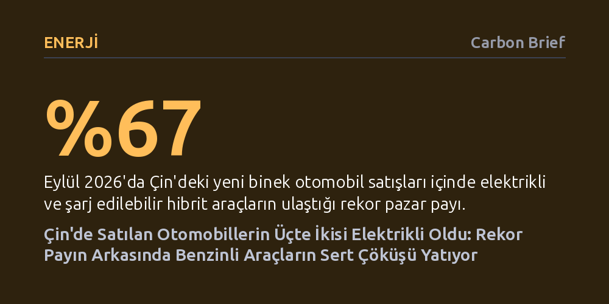

ENERJI · Carbon Brief · 2026-10-24
Çin'de yeni nesil elektrikli araçlar Eylül ayında yüzde 67'lik rekor pazar payına ulaştı, ancak bu artış satış patlamasından değil benzinli araç talebinin çökmesinden kaynaklandı. Hürmüz krizinin tetiklediği petrol şoku iç pazarı daraltırken, Çinli üreticiler fazla kapasitelerini rekor ihracata yönlendiriyor.
Ulaşımda elektrifikasyonun yalnızca çevreci bir hevesle değil, petrol krizlerine karşı ulusal bir enerji güvenliği kalkanı olarak geleneksel otomotiv sanayisini kalıcı biçimde dönüştürdüğünü gösteriyor.

Çin binek otomobil pazarından gelen son resmi veriler ilk bakışta tarihi bir sıçramaya işaret ediyor: Eylül ayında satılan her üç yeni otomobilden ikisi, yani tam yüzde 67'si bataryalı elektrikli veya şarj edilebilir hibrit modellerden oluştu. Çin Binek Otomobil Birliği'nin (CPCA) yayımladığı bu oran, ülke tarihinin en yüksek seviyesini kayıtlara geçirdi. Yalnızca altı yıl önce, 2020'de yeni satışların sadece yüzde 6'sını oluşturan yeni enerjili araçların (NEV) bugün yüzde 58'lik yıl geneli ortalamasına ve Eylül'de yüzde 67'ye tırmanması, dönüşümün hızını somut biçimde belgeliyor.
Ne var ki bu rekorun ardında bir satış patlaması değil, genel otomotiv pazarında yaşanan sert bir daralma bulunuyor. Çin genelinde toplam otomobil perakende satış hacmi Eylül ayında yıllık bazda yüzde 28 geriledi. Bu genel düşüşten yeni nesil araçlar da kaçamadı; NEV satışları geçen yılın aynı ayına göre yüzde 17, yılın ilk dokuz ayında ise yüzde 13 azaldı. Dolayısıyla elektrikli araçların pazar payındaki rekor yükseliş, kendi satışlarının artmasından değil, benzinli araç pazarının çok daha dramatik bir hızla çökmesinden kaynaklanıyor.
Pazardaki asıl kırılma, geleneksel içten yanmalı motorlu araçların olağanüstü hızla irtifa kaybetmesiyle gerçekleşti. Yalnızca fosil yakıtla çalışan otomobillerin satışları Eylül ayında yıllık yüzde 43, 2026'nın ilk dokuz ayında ise yüzde 31 oranında sert bir düşüş kaydetti. CPCA Genel Sekreteri Cui Dongshu, benzinli araçlardaki bu büyük çöküşün ana nedeni olarak Hürmüz Boğazı'nda patlak veren krizin ardından tırmanan akaryakıt fiyatlarını işaret ediyor. Çatışmalar nedeniyle tedarikin daralması, Çin'in ham petrol ithalatını Ocak-Eylül döneminde yüzde 15 (yaklaşık 470 milyon varil) aşağı çekti ve artan benzin maliyeti geleneksel araçları tüketici için hızla cazibesiz kıldı.
Bu ekonomik baskı, araç segmentlerinin kriz karşısındaki dayanıklılığını da ayrıştırdı. İçten yanmalı bir motora da sahip olan şarj edilebilir hibritlerin (PHEV) satışları Eylül ayında yüzde 36 gerilerken, yalnızca elektrikle çalışan bataryalı araçlar (BEV) aynı dönemde yüzde 8,5'lik bir kayıpla süreci çok daha güçlü atlattı. Aslında Çin'de içten yanmalı araç satışları 2017 yılında zirve noktasına ulaşmış ve o tarihten bu yana düzenli bir gerileme patikasına girmişti; ancak Hürmüz enerji şoku bu yapısal eğilimi benzeri görülmemiş bir hızlanmaya uğrattı.
Yaşanan gelişmeler, Çin'in yıllar önce elektrikli araçlara başlattığı stratejik yönelimin bir tüketici trendinden çok daha fazlası olduğunu gösteriyor. Columbia Üniversitesi Küresel Enerji Politikası Merkezi'nden Dr. Erica Downs, Hürmüz krizinin ve tırmanan petrol fiyatlarının 'Çin'in kara yolu ulaşımını elektriklendirme sürecini daha da pekiştirdiğini' belirtiyor. Downs'a göre dünyanın tanık olduğu bu en büyük petrol arzı kesintisi, Pekin'in en başından beri petrol tedarik güvenliğini garanti altına alma kaygısıyla elektrikli araçlara yaptığı erken yatırımı bütünüyle haklı çıkarmış durumda.
Söz konusu stratejik kazanım istatistiklere de net biçimde yansıyor. Düşünce kuruluşu Ember'ın kıdemli enerji analisti Euan Graham, Çin'in devasa elektrikli araç filosunun Hürmüz krizinin başından bu yana tam 143 milyon varillik ham petrol talebini doğrudan ikame ettiğini vurguluyor. Brookings Enstitüsü'ne aktarılan tahminler ise kriz sonrasında Çin'in toplam petrol kullanımındaki düşüşün yüzde 12'sinin doğrudan elektrikli araçların varlığından kaynaklandığını gösteriyor. Elektrikli filo, ülkeyi küresel petrol şoklarına karşı devasa bir koruma kalkanına dönüştürüyor.
Pazar payı rekor seviyelere çıksa da uzmanlar iç pazardaki elektrifikasyon dalgasının doğal sınırlarına yaklaştığını değerlendiriyor. On yılı aşkın süredir yürürlükte olan tam taşıt alım vergisi muafiyetinin Aralık 2025'te sona ermesi, talebin önemli bir kısmını bir önceki yıla çekmişti. Danışmanlık şirketi AlixPartners'tan Zhang Yichao, Çin'de elektrikli araç payının yüzde 80 barajını aşmasının pek olası olmadığını, lüks segmentlerin ve bazı özel kullanım alanlarının içten yanmalı motorlara ihtiyaç duymaya devam edeceğini öngörüyor. Yüksek baz etkisi, değişen takas teşvikleri ve sıkılaşan finansman koşulları da iç talebin ivme kaybını açıklıyor.
İç pazardaki yavaşlama ve amansız rekabet ortamı karşısında Çinli otomobil üreticileri çıkış yolunu yurt dışına açılmakta buluyor. Yurt içi perakende satışların gerilediği Eylül 2026'da Çin'in yeni nesil araç ihracatı yıllık yüzde 164 sıçrayarak 558 bin adede fırladı. Ne var ki bu ihracat akını küresel çapta yoğun bir korumacılık dalgasıyla karşılaşıyor. Avrupa Birliği'nin elektrikli araçlara koyduğu ek tarifeler ve hibrit ithalatını kısma kararlarının yanı sıra Meksika ve Türkiye de benzer vergileri yürürlüğe koydu. Pekin yönetiminin ihracatta KDV iadelerini kısma yönündeki son adımları da eklendiğinde, Çinli üreticilerin dış pazarlarda çok daha çetin bir fiyat ve politika savaşıyla yüzleşeceği anlaşılıyor.